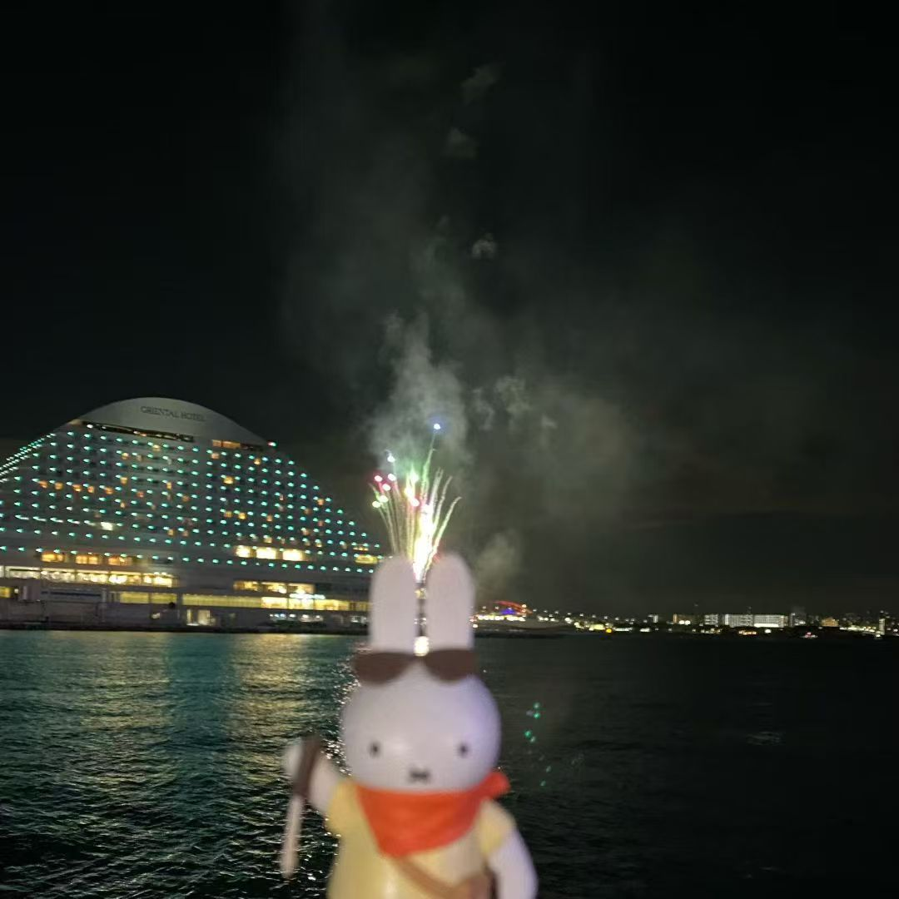
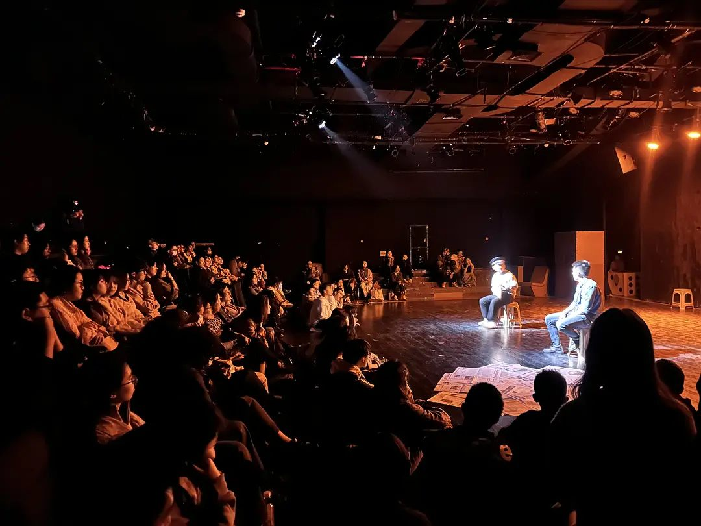
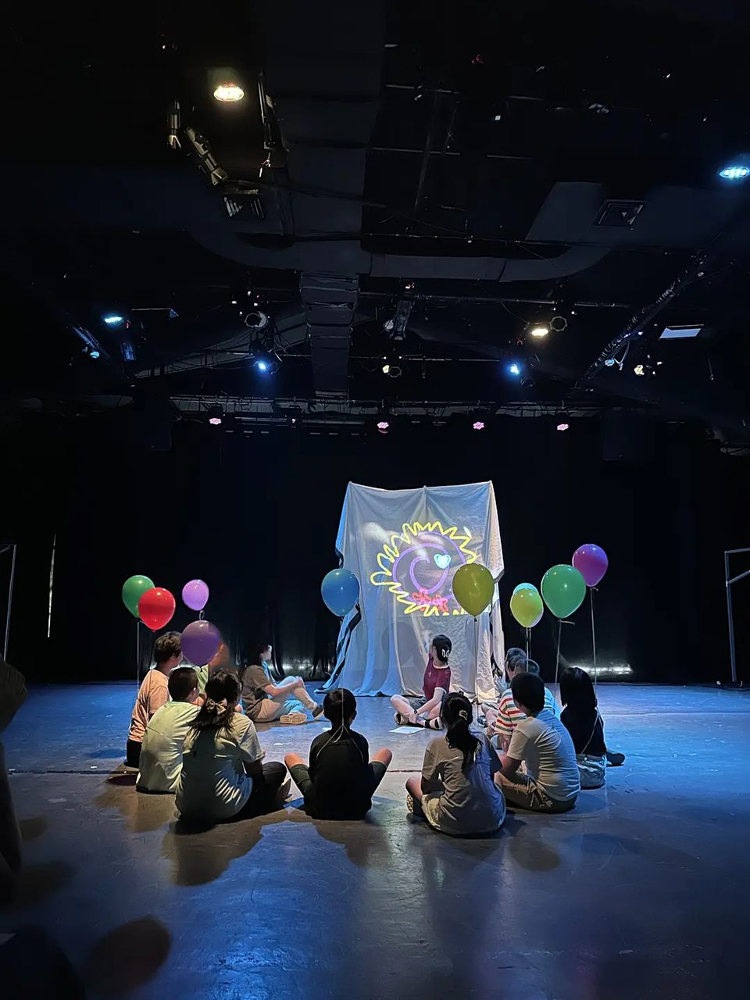
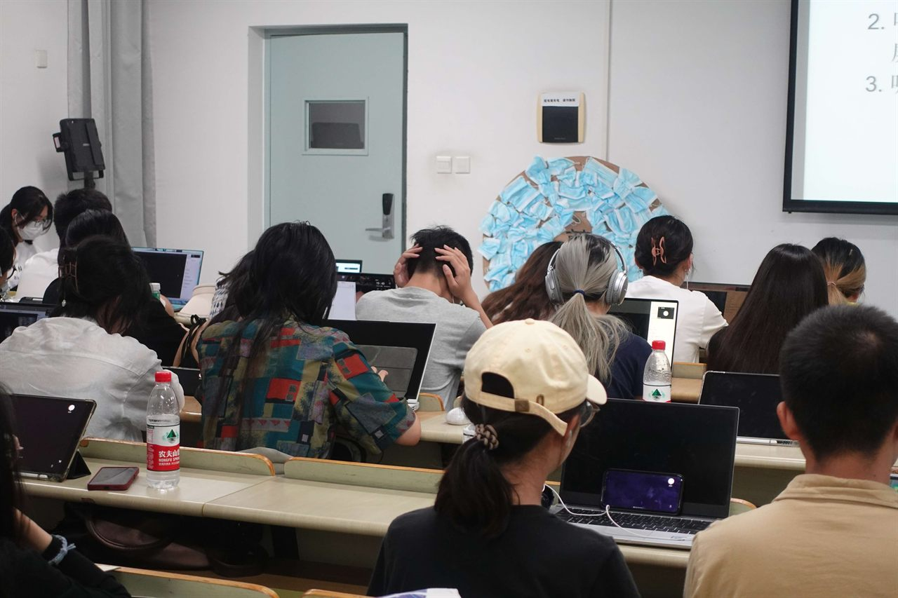

ペール・ギュント――豚の幻想曲
Peer Gynt — Fantasia of a Pig
第15回国際イプセン会議 上演作品。資金・進行・チーム編成をゼロから統括した、初めての本格的プロデュース。
研究 ／ 実践 ・ RESEARCH / PRACTICE
薛天楽（XUE TIANLE）
中国・江蘇省出身
2023年学部2年次より演劇活動を始め、理論と実践の融合を目指してきました。 人と共に劇場で作品をつくることを大切にし、現在は主に舞台監督／制作として活動しながら、 自身の創作と研究の道を模索しています。

東京大学大学院 総合文化研究科
表象文化研究コース研究生
01
現代演劇と小劇場演劇を軸に、身体・ポップカルチャー・虚構と現実の関係を横断的に考えています。 実践と並走するかたちで書いてきた論文のテーマでもあります。
現場での役割 / ROLES
02
2023年から2024年にかけて、南京大学ブラックボックスシアターを中心に関わった舞台作品と、 それと並走してきた研究・論文です。
第15回国際イプセン会議 上演作品。資金・進行・チーム編成をゼロから統括した、初めての本格的プロデュース。

45〜72歳の女性6名へのインタビューから立ち上げたドキュメンタリー演劇。宣伝美術と稽古の記録も担当。

出稼ぎ労働者家庭の子どもたちと5か月かけてつくった、南京大学コミュニティ実験劇場 第2期プロジェクト。

コロナ禍の教室で行われた「未遂の講演会」。デバイジングの手法で俳優自身の経験から構成した上演。

初めて演劇実践に加わった作品。Aranya演劇祭にも招聘。ここから私の劇場生活が始まった。
岡田利規『スーパープレミアムソフトWバニラリッチ』を対象に、身体動作とバッハ平均律が生む「儀式性」を分析。
言語戦略と歪んだ身体表現から、現実と虚構の境界を曖昧にする岡田利規の「超現実」美学を読み解く。
メルロ゠ポンティの身体理論を援用し、VTuberを三層に分解して「化身」の二重機能を考察。
計量映画学の指標を用い、編集率と長回しの組み合わせが虚構と非虚構を往還する映像時空を論じる。
03
理論と実践の融合を目指し、演劇芸術の中で「リアル」の在り処を探っている。 自身の未熟さに真摯に向き合いながら、挑戦と学びを重ねている。
演劇映画芸術専攻（学部）。中国・南京を拠点に活動。
学部2年次より座組に参加。プロデューサー助手・制作・舞台監督・演出助手・プロデューサーと役割を広げる。
表象文化研究コース 外国人研究生。日本を拠点に、創作と研究を続ける。
現代演劇と小劇場演劇、身体、ポップカルチャー、そして虚構と現実の関係。 理論と実践のあいだを往復することが、いまのテーマです。
04
上演の制作・舞台監督、宣伝美術、共同研究のご相談など、お気軽にどうぞ。